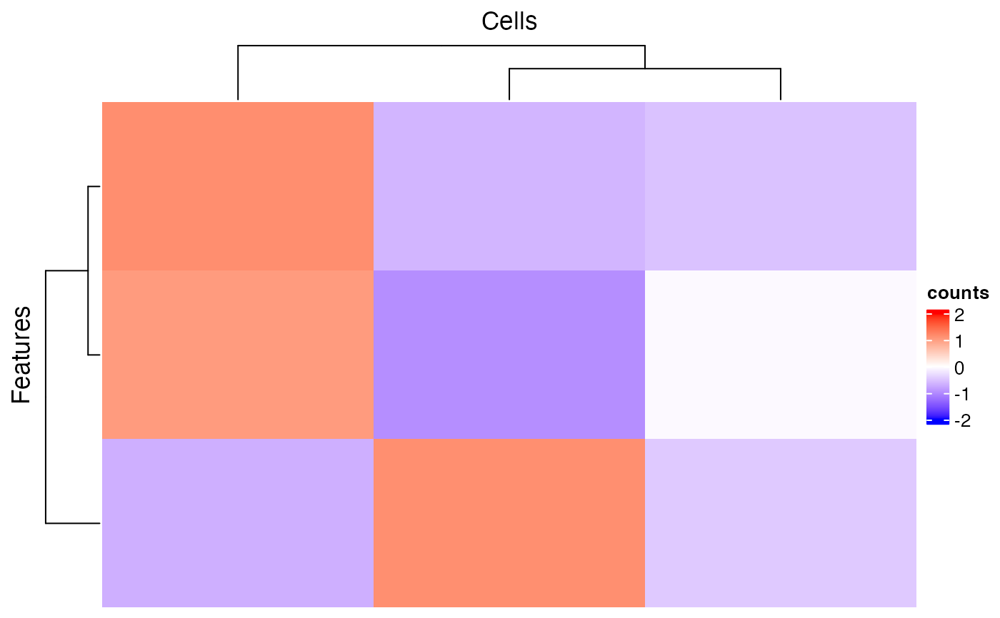

R/plotSCEHeatmap.R
plotSCEHeatmap.RdPlot heatmap of using data stored in SingleCellExperiment Object
plotSCEHeatmap( inSCE, useAssay = "logcounts", doLog = FALSE, featureIndex = NULL, cellIndex = NULL, featureIndexBy = "rownames", cellIndexBy = "rownames", featureAnnotations = NULL, cellAnnotations = NULL, featureAnnotationColor = NULL, cellAnnotationColor = NULL, rowDataName = NULL, colDataName = NULL, rowSplitBy = NULL, colSplitBy = NULL, rowLabel = FALSE, colLabel = FALSE, rowDend = TRUE, colDend = TRUE, scale = TRUE, trim = c(-2, 2), title = "SCE Heatmap", rowTitle = "Genes", colTitle = "Cells", rowGap = grid::unit(0, "mm"), colGap = grid::unit(0, "mm"), border = FALSE, colorScheme = NULL, ... )
| inSCE | SingleCellExperiment inherited object. |
|---|---|
| useAssay | character. A string indicating the assay name that provides the expression level to plot. |
| doLog | Logical scalar. Whether to do |
| featureIndex | A vector that can subset the input SCE object by rows
(features). Alternatively, it can be a vector identifying features in
another feature list indicated by |
| cellIndex | A vector that can subset the input SCE object by columns
(cells). Alternatively, it can be a vector identifying cells in another
cell list indicated by |
| featureIndexBy | A single character specifying a column name of
|
| cellIndexBy | A single character specifying a column name of
|
| featureAnnotations |
|
| cellAnnotations |
|
| featureAnnotationColor | A named list. Customized color settings for
feature labeling. Should match the entries in the |
| cellAnnotationColor | A named list. Customized color settings for
cell labeling. Should match the entries in the |
| rowDataName | character. The column name(s) in |
| colDataName | character. The column name(s) in |
| rowSplitBy | character. Do semi-heatmap based on the grouping of
this(these) annotation(s). Should exist in either |
| colSplitBy | character. Do semi-heatmap based on the grouping of
this(these) annotation(s). Should exist in either |
| rowLabel | Use a logical for whether to display all the feature names,
a single character to display a column of |
| colLabel | Use a logical for whether to display all the cell names, a
single character to display a column of |
| rowDend | Whether to display row dendrogram. Default |
| colDend | Whether to display column dendrogram. Default |
| scale | Whether to perform z-score scaling on each row. Default
|
| trim | A 2-element numeric vector. Values outside of this range will be
trimmed to their nearst bound. Default |
| title | The main title of the whole plot. Default |
| rowTitle | The subtitle for the rows. Default |
| colTitle | The subtitle for the columns. Default |
| rowGap | A numeric value or a |
| colGap | A numeric value or a |
| border | A logical scalar. Whether to show the border of the heatmap or
splitted heatmaps. Default |
| colorScheme | function. A function that generates color code by giving
a value. Can be generated by |
| ... | Other arguments passed to |
A Heatmap object
Yichen Wang
